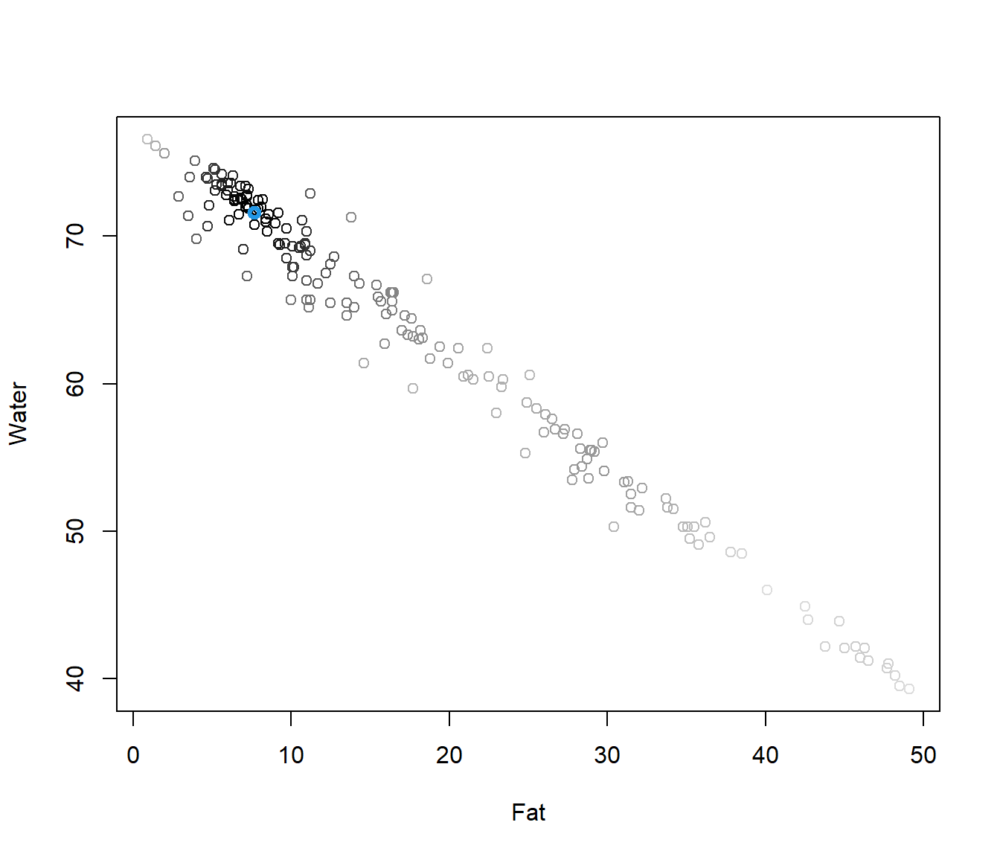
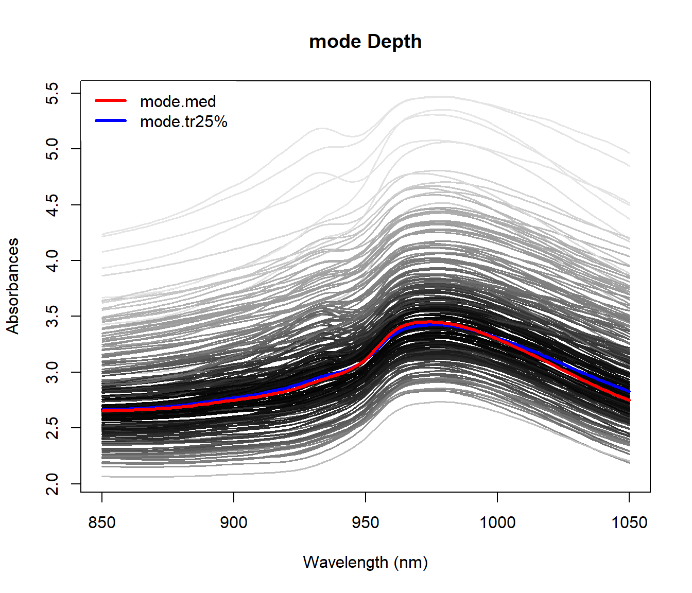
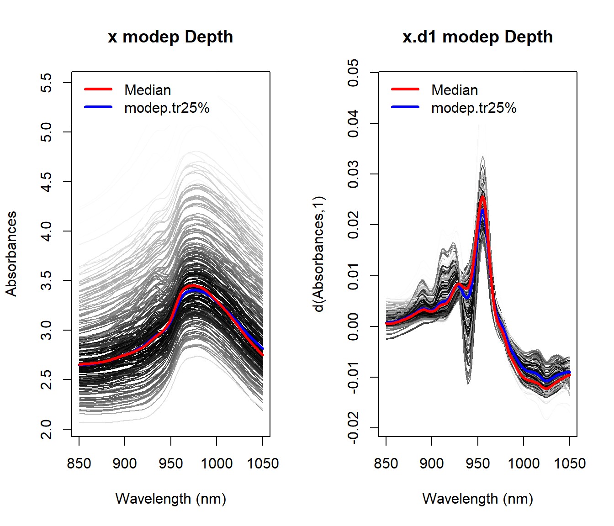
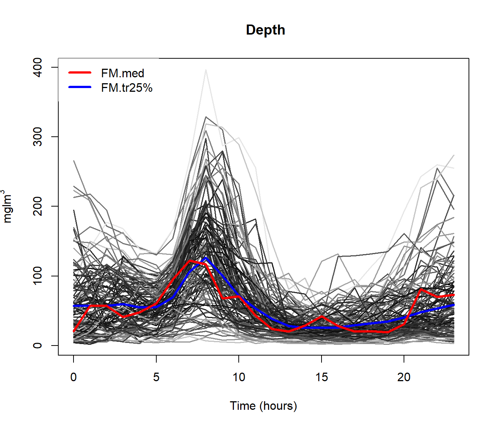

Chapter 7 Step 4: Check package
devtools::check() # devtools::check(manual = TRUE)
devtools::install()

7.0.1 Depth (and distances) for multivariate functional data (J. A. Cuesta-Albertos, Febrero-Bande, and Oviedo de la Fuente 2017)
Modify the procedure to incorporate the extended information.
- Fraiman–Muniz: Compute a multivariate depth marginally.
depth.FMp - Modal depth: Use a new distance between data (for derivatives, for example, the Sobolev metric).
depth.FMp - Random Projection: Consider a multivariate depth to be applied to the dierent projections (also the random projection method could be applied twice).
depth.RPp

Example poblenou dataset
Hourly levels of nitrogen oxides in Poblenou (Barcelona). This dataset has 127 daily records (2005/01/06-2005/06/26).
Objective: Explain the diferences in NOx levels as a function of day.
data(poblenou)
dayw = ifelse(poblenou$df$day.week == 7 | poblenou$df$day.festive ==1, 3, ifelse(poblenou$df$day.week == 6, 2, 1))
plot(poblenou$nox,col=dayw)
The \(\mathcal{L}_2\) space (distance is area between curves) seems appropriate although other possibilities could be take into account (\(\mathcal{L}_1\), for example).

md = depth.mode(poblenou$nox)
rpd = depth.RP(poblenou$nox, nproj = 50)
rtd = depth.RT(poblenou$nox)
print(cur <- c(fmd$lmed, md$lmed, rpd$lmed, rtd$lmed))## 2005-05-06 2005-05-06 2005-05-06 2005-03-04
## 63 63 63 10plot(poblenou$nox,col="grey")
lines(poblenou$nox[cur], lwd = 2, lty = 1:4, col = 1:4)
legend("topleft", c("FMD", "MD", "RPD", "RTD"), lwd = 2, lty = 1:4,col = 1:4)
7.0.2 Outliers detection
There is no general accepted definition of outliers in Functional data so, we define outlier as a datum generated from a dierent process than the rest of the sample with the following characteristics Its number in the sample is unknown but probably low.
An outlier will have low depth and it will be an outlier in the sense of the depth used.
md1 = depth.mode(lab <- poblenou$nox[dayw == 1]) #Labour days
md2 = depth.mode(sat <- poblenou$nox[dayw == 2]) #Saturdays
md3 = depth.mode(sun <- poblenou$nox[dayw == 3]) #Sundays/Festive
rbind(poblenou$df[dayw == 1, ][which.min(md1$dep), ], poblenou$df[dayw ==
2, ][which.min(md2$dep), ], poblenou$df[dayw == 3, ][which.min(md3$dep),])## date day.week day.festive
## 22 2005-03-18 5 0
## 57 2005-04-30 6 0
## 58 2005-05-01 7 0
# Method for detecting outliers, see Febrero-Bande, 2008
#out1 <- outliers.depth.trim(poblenou$nox[dayw == 1],nb=100)$outliersTwo procedures for detecting outliers are implemented in the package. (Febrero-Bande, Galeano, and González-Manteiga 2008)
Detecting outliers based on trimming:
outliers.depth.trim()Detecting outliers based on weighting:
outliers.depth.pond()